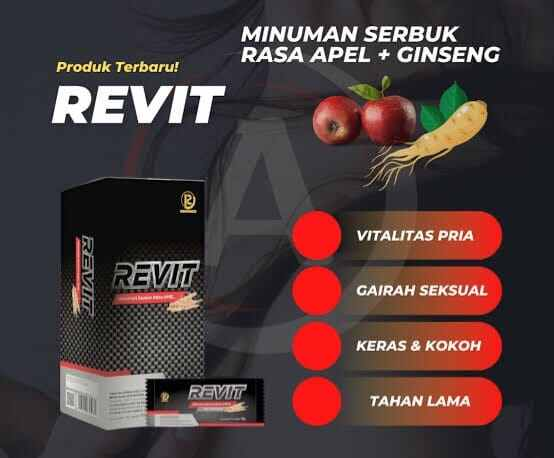

SELAMAT DATANG DI WEBSITE PUPUK PATEN TEKNOLOGI NANO
PRODUK PERTANIAN
Paten Pupuk
Keunggulan Paten Pupuk:
- Meningkatkan Hasil & kualitas produksi
- Mempercepat masa panen
- Merangsang pembuhan di luar musim
- meringankan biaya produksi
- Memperkuat daya tahan tanaman terhadap cuaca ekstrem
cara pengunaan Paten Pupuk
Paten Imun
keunggulan Pupuk Paten Imun:
- Meningkatkan Imunitas tanaman terhadap Bakteri, Virus dan Jamur
- Meningkatkan kinerja Paten 10 kali lipat
- Menghemat Fungisida sampai 100%
- Menghemat Pestisida sampai 80%
- Menghemat Pupuk Kimia sampai 80-100%
cara pengunaan Paten Imun
Paten Gold

keunggulan Pupuk Paten Gold:
- Mempercepat masa Panen
- Merangsang pembuahan di luar musim
- Meringankan biaya produksi
- Mudah di aplikasikan
- Memperkuat daya tahan tanaman terhadap cuaca ekstrem
PRODUK KESEHATAN
Revit

keunggulan Revit:
- Membuat ereksi lebih kuat dab tahan lama
- Menambahkan stamina & Vitabilitas Pria
- Menambahkan Gairah Seksual
- Meningkatkan Kejantanan Pria
- Meningkatkan sirkulasi darah
- Melancarkan Peredaran darah
Colpro

keunggulan Colpro:
- Memperkuat sistem kekebalan tubuh
- Meregenerasi Sel
- Membunuh Bakteri penyebab iritasi lambung
- Membantu pengobatan alergi dan asma
- Membantu pengobatan flu
- Menjaga kesehatan jantung dan pembulu darah
Fibra
keunggulan Fibra:
- Memperkuat sistem kekebalan tubuh
- Meregenerasi Sel
- Membunuh Bakteri penyebab iritasi lambung
- Membantu pengobatan alergi dan asma
- Membantu pengobatan flu
- Menjaga kesehatan jantung dan pembulu darah
PRODUK KECANTIKAN